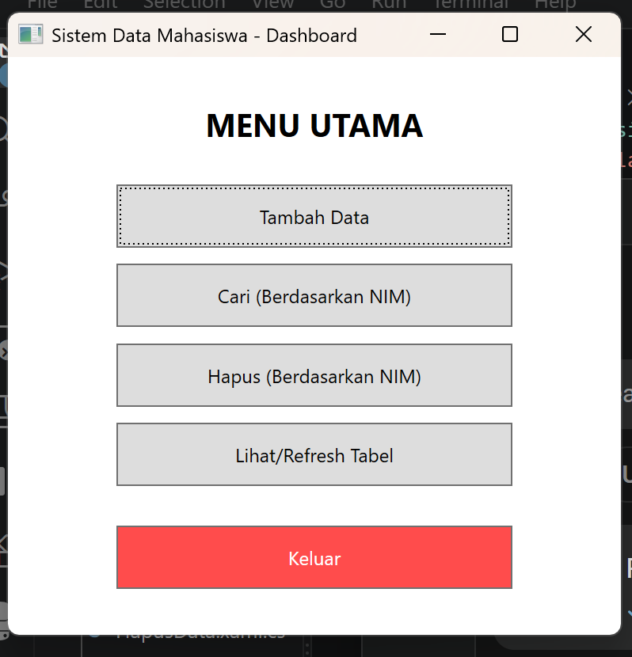
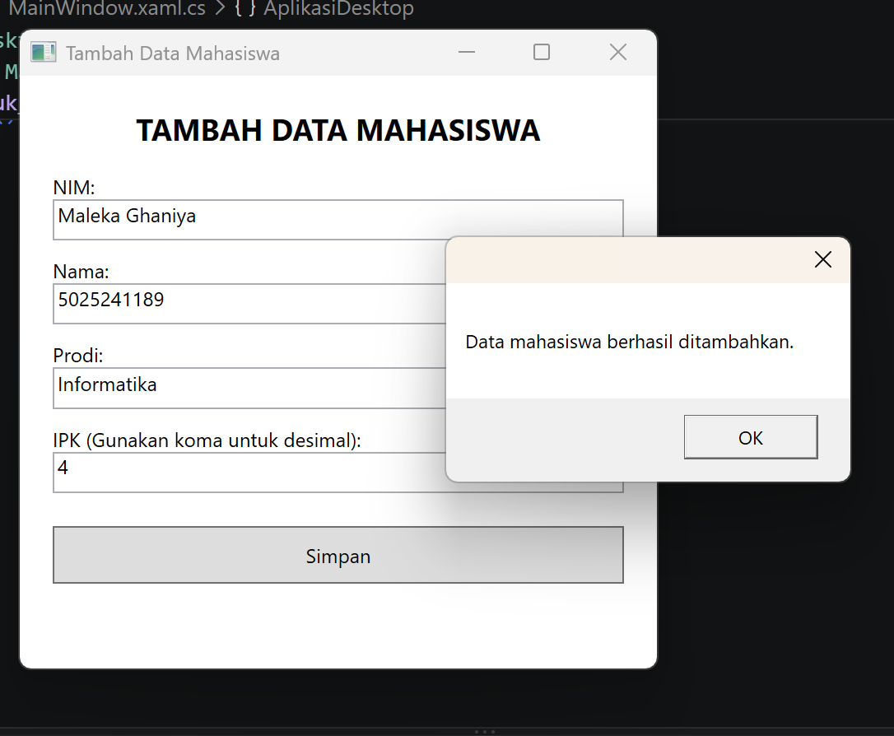
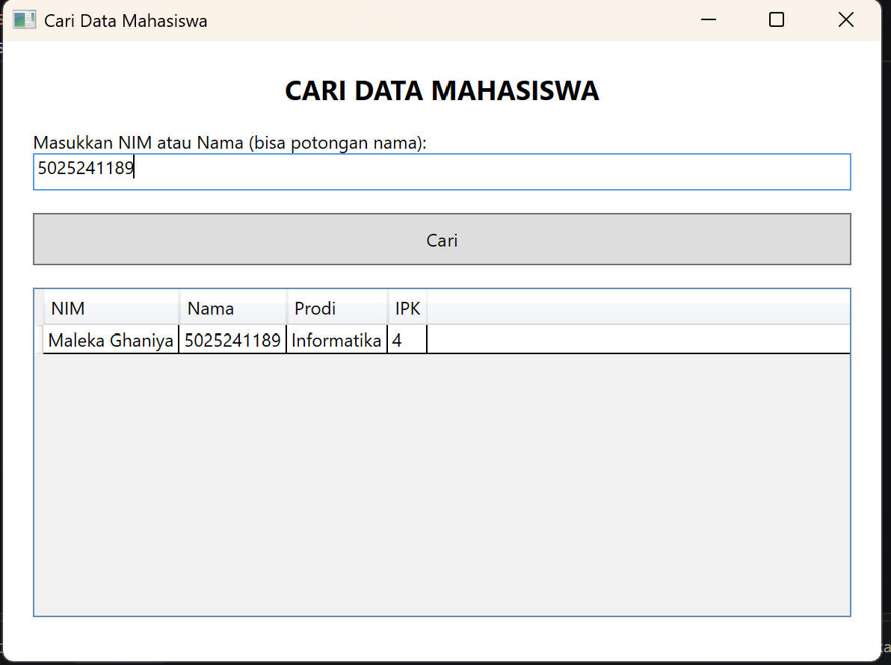
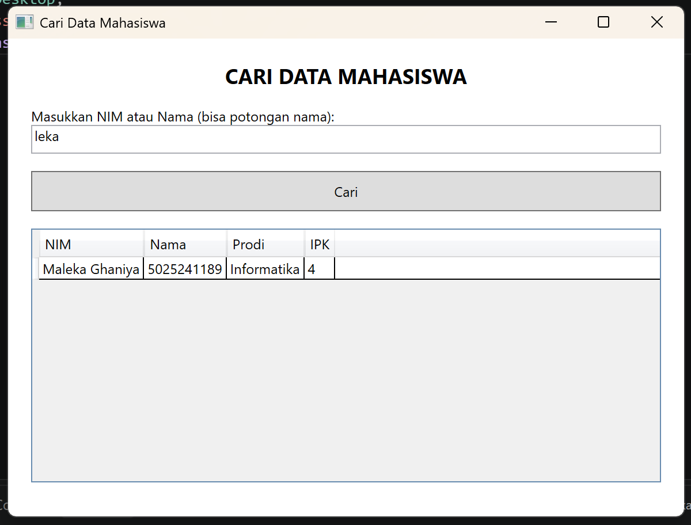
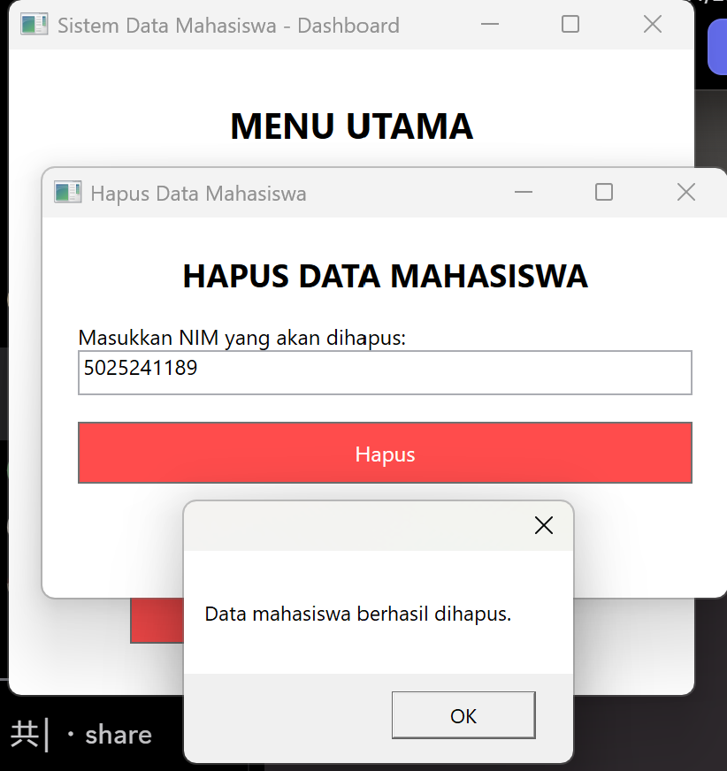
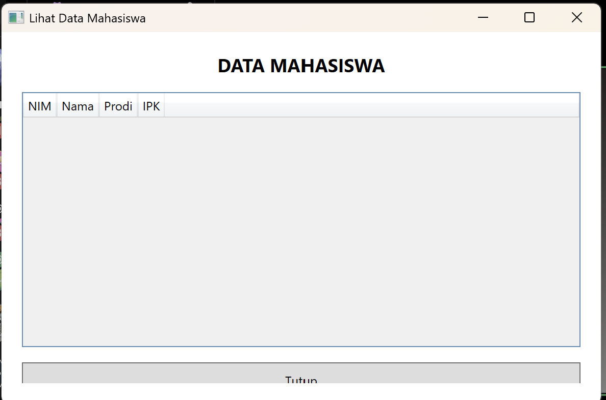
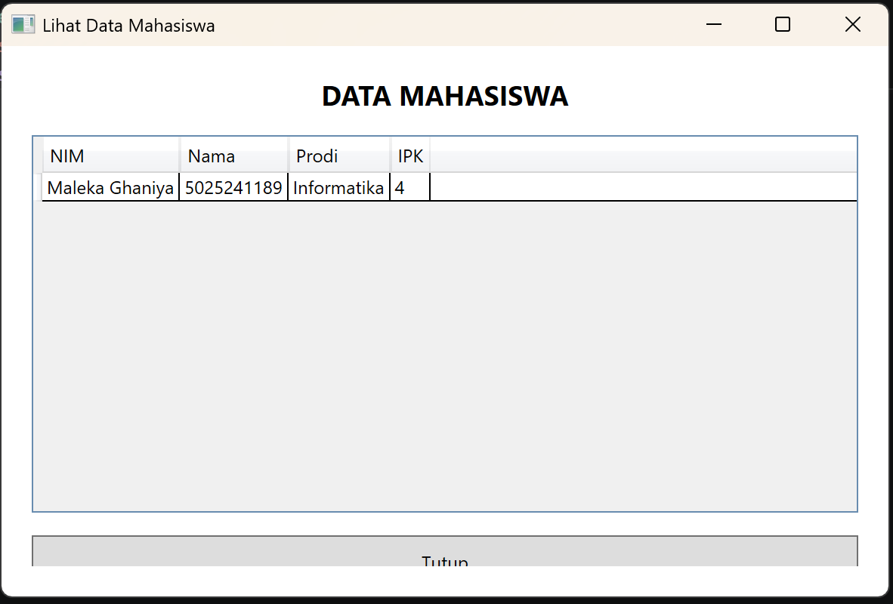

Membuat aplikasi desktop sederhana sistem pendataan mahasiswa, dengan fitur-fitur :
Disini saya menggunakan framework .NET. bahasa yang digunakan yaitu bahasa C# sebagai logika dan bahasa XAML untuk tampilan.
Aplikasi ini memiliki beberapa fitur utama. Berikut adalah penjelasan logika C# (backend) yang berjalan di balik layar untuk masing-masing fitur:

private void tambah_data_click(object sender, RoutedEventArgs e)
{
string nim = InputNim.Text;
string nama = InputNama.Text;
string prodi = InputProdi.Text;
if (double.TryParse(InputIpk.Text, out double ipk))
{
if (ipk >= 0 && ipk <= 4)
{
Mahasiswa mhsBaru = new Mahasiswa(nim, nama, prodi, ipk);
DataStore.DaftarMahasiswa.Add(mhsBaru);
MessageBox.Show("Data mahasiswa berhasil ditambahkan.");
this.Close();
}
}
}
Logika ini mengambil input dari *textbox*, memvalidasi apakah IPK berupa angka 0-4, lalu membuat objek Mahasiswa baru dan menambahkannya ke dalam DataStore.DaftarMahasiswa (sebuah List statis yang menyimpan semua data).

private void cari_data_click(object sender, RoutedEventArgs e)
{
string keyword = InputPencarian.Text.ToLower();
List<Mahasiswa> hasilPencarian = new List<Mahasiswa>();
foreach (Mahasiswa m in DataStore.DaftarMahasiswa)
{
if (m.NIM.ToLower().Contains(keyword) || m.Nama.ToLower().Contains(keyword))
{
hasilPencarian.Add(m);
}
}
TabelHasilPencarian.ItemsSource = hasilPencarian;
}
Fungsi ini melakukan pencarian data berdasarkan NIM atau Nama. Input dari pengguna dan data asli dikonversi menjadi huruf kecil (`ToLower()`) lalu dicari kecocokannya (`Contains()`). Semua data yang cocok akan dimasukkan ke *list* baru lalu ditampilkan dalam sebuah tabel (*DataGrid*).


private void hapus_data_click(object sender, RoutedEventArgs e)
{
string nimHapus = InputNimHapus.Text.Trim();
Mahasiswa? mahasiswaDitemukan = null;
foreach (Mahasiswa m in DataStore.DaftarMahasiswa)
{
if (m.NIM.Trim().Equals(nimHapus, StringComparison.OrdinalIgnoreCase))
{
mahasiswaDitemukan = m;
break;
}
}
if (mahasiswaDitemukan != null)
{
DataStore.DaftarMahasiswa.Remove(mahasiswaDitemukan);
MessageBox.Show("Data mahasiswa berhasil dihapus.");
}
}
Fungsi ini mencari mahasiswa berdasarkan NIM yang dimasukkan secara spesifik. Penggunaan Trim() memastikan spasi ekstra yang tidak sengaja terketik akan diabaikan. Jika data ditemukan, data tersebut akan dihapus dari *List* menggunakan perintah Remove().


private void LoadData()
{
TabelMahasiswa.ItemsSource = null;
TabelMahasiswa.ItemsSource = DataStore.DaftarMahasiswa;
}
Fungsi LoadData() dipanggil saat *Window* Lihat Data dibuka. Fungsi ini langsung mengikat data (*binding*) dari DataStore.DaftarMahasiswa ke komponen DataGrid agar otomatis dirender sebagai tabel yang terstruktur.

private void keluar_click(object sender, RoutedEventArgs e)
{
this.Close();
}
Perintah this.Close() akan menutup Window Dashboard, yang secara efektif akan mengakhiri berjalannya aplikasi karena merupakan jendela utama.